Jaivox App Gen (JAG) is a graphical tool for developing voice applications.
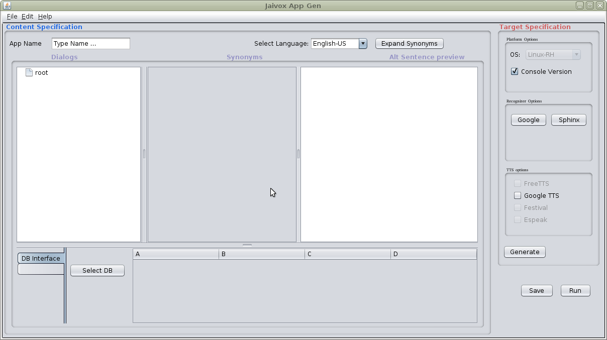
This tools reads in a dialog (i.e. questions and answers) in a tree form and creates an application where you can ask questions and receive answers. You can run the application from the tool or run it as an independent application outside the graphical tool.
Installation
Download the zip file jaivox_jag (changeme!). Unzip the file to your favorite location to create a directory jaivox_jag.0.1.
To run, make sure that you have a sub directory dist containing jag.jar, and another sub directory called work
The executable is the jar file jag.jar, you run this using java.
java -jar dist/jag.jar
JAG Tutorial
This tutorial shows how you can load a conversation (also called dialog) written in a tree form. After completing the steps below, you can ask questions as in the conversation to receive answers given in the loaded conversation.
The tutorial illustrates a dialog that acts like a doctor diagnosing whether a patient has a cold or a fever.
Name the project
The first step is to give a name to the application. In this case let us say you name it:
cold
Load or create rules
To get started you can load the rules in cold.tree. This is located in
work/apps/samples/quick/tutorial
Before loading any dialog, select the language English-US from the drop down menu at the top of the JAG window, then press the button "Expand Synonyms" located next to this drop down list.
Use the menu at the top of the JAG window to open a
File->Open Dialog-> select the file name
This will load the tree cold.tree in the left side of the screen ("the dialog window").
This shows questions (apparently from a patient) to a doctor. The answers that the doctor gives (which may be further questions) are given below that.
The logic of this conversation can be expressed in conventional IF THEN terms
IF user = i am feeling sick THEN System = do you feel hot and THEN
IF user = a little THEN System = is your nose runny and THEN
IF user = yes THEN System = how is your throat and THEN
IF user = itchy THEN System = it is probably just a cold
ELSE IF user = hurts THEN System = could be an infection. are you coughing
and THEN
IF user = a lot THEN System = go to a doctor
ELSE IF user = a little THEN System = may be best to go to a doctor
ELSE IF user = no THEN System = try drinking some fluids
ELSE IF user = fine THEN System = are you wheezing and THEN
IF user = yes THEN System = a lot or just a little and THEN
IF user = a lot THEN System = could be asthma
here user is the patient and System is the automated adviser.
JAG will convert this logic directly to a speech application. Let us see how that is done.
Introduce or eliminate synonyms
Click on the line in the dialog window that says "i am feeling sick".
In the next window (called synonym window), you can see several possible replacements for the word "sick".
As you can see, many of the synonyms don't really make much sense. But these are the synonyms that are available from the thesaurus we use (Wordnet.)
If you think the user could say the following things
I am feeling nauseated.
I am feeling ill.
I am feeling unbalanced.
Then you can un-check all the other word possibilities.
As you do this, on the right side panel, you will see a list of sentences which includes the original sentence
i am feeling sick
In addition to the three sentences that are give above.
What this means is that the user may say any of these four sentences and the system would respond as in the tree. In this case, the system will say something like "do you feel hot". The response "do you feel hot" could be replaced with one of many options you see when you select that line.
Adding your own variations
Suppose you want to say instead of "i am sick" "i am weak". That is not one of the synonym options we find in our thesaurus. But you can add it.
To do that, right click on the last row of the synonym table which will popup a menu. Select "Add a row" from that, then just type in "weak" in the last column of the newly created row.
Add new nodes to the dialog tree
You can add new sentences to the dialog tree on the left by right clicking on any row and selecting "Add". This will add a new child to the node at that row.
Saving and Running
Select Google and GoogleTTS from the right side check boxes. This will make it possible for you to test your dialog using the online resources provided by Google.
When you click Run, if you have not saved your changes already, you will be prompted for a location ot store your changes. It will be saved in the selected location in a folder with the name that you gave for the application in step 1.
when you Run, you are expected to play the role of the user. You can start by saying "i am feeling ill" and see what the system says in response.
Details
Application Name
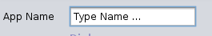
The name should be a single word. For example, you could have an application named "salesperson" but not one named "sales person" (that would be two words, you need to use a single word.) The application name is used when generating files. The names of the generated files is usually the application name followed by something else. For example, if the application name is "buyer" the dialog file may be "buyer.dlg".
Select Language
The examples here are in English, this is the selected language by default.
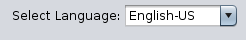
There are several other supported language, but all except English do not work with the Sphinx recognizer. Synonym expansion also works only with English.
Expand Synonyms
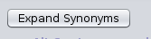
This button is not selected by default. If the language is English, then press in this button before loading a dialog (for now) to find synonyms for some of the words in a dialog.
Run Button
Use this button to run the application (you may save the configuration using the Save button however Run will prompt you to save first. Currently you can run the application if you use the Google recognizer and synthesizer, or if you use the console option.
Save Configuration
Please use this button to save the changes you have made. This information is used to configure a speech application. The Save button will prompt you for a location to save the configuration information.
After saving the information, you can also run the application provided you choose a web based recognizer (currently, only Google.)
Console Option
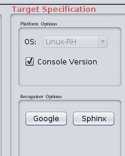
Choose this option to create applications that do not need a recognizer or a synthesizer. Instead, you ask questions by typing them, and the answers are also printed out on the screen. The console option is the easiest to use when testing an application, since you just have to type in the input and read the output; this is especially useful if you do not speak the target language of the application fluently.
You can ask questions by typing it into the top window
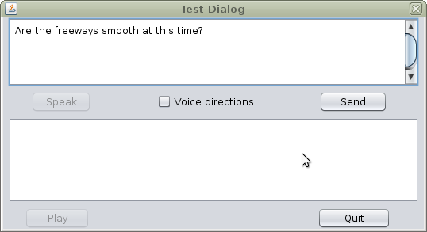
The answers are also given in the top window (the bottom part is for diagnostics.)
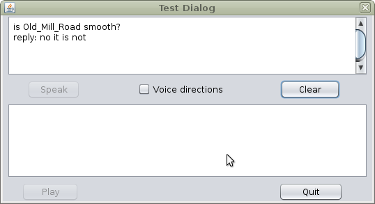
Press the clear button to ask a new question.
Espeak Synthesizer
Espeak is a speech synthesizer that is available for Linux and Windows. It is generally used as an independent program that you invoke with instructions on what to say. For more information on Espeak please see The Espeak page on Sourceforge. (The Espeak option is turned off in version 0.1)
Festival Synthesizer
Festival is a C/C++ synthesizer. It generally installed by default on Linux machines. The Jaivox package contains C++ agents that can create Festival Synthesizers and communicate with them through network sockets. Festival is a project of University of Edinburgh. (In the current version, Festival is disabled because it involves some complicated installation steps.)
Freetts Speech Synthesizer
Freetts is an open source speech synthesizer written in Java. This can be used as a synthesizer, i.e. a way to get spoken responses, from speech recognition applications. You need to have freetts.jar in the CLASSPATH. For more details on configuring freetts, please see using Freetts. (This option is turned off in version 0.1)
Google Recognizer
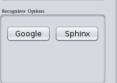
Most of us know about Google's speech recognizers through voice search. There is an unofficial API (for now, 2013) that can be accessed through other programs. This API supports many languages also.
One way to use the API is through Jaivox's com.jaivox.recognizer.web interface (which can be modified to fit any web-based recognizer, not just Google's.) This will convert live speech into FLAC format files that are submitted for recognition.
One advantage of selecting the Google recognizer is that you can immediately test your dialog design by connecting online (so long as the unofficial API is available.) But the Google recognizer is not open source, unlike the Sphinx Recognizer.
Google Synthesizer
You can use the Google Synthesizer or "Text to Speech" to speak responses from the speech recognition application. The name should be a single word. For example, you could have an application named "salesperson" but not one named "sales person" (that would be two words, you need to use a single word.)
The Google Synthesizer produces fairly high quality speech, however for a detailed review of its capabilities for many languages, please see Testing Google's Text to Speech.
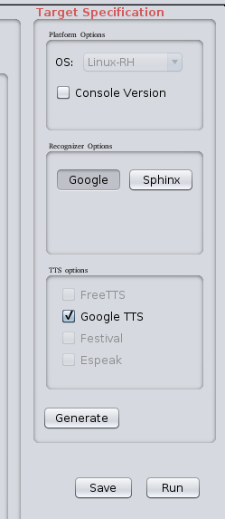
As shown above, selecting these options disables some of the other options like using the console or Sphinx.
This speech synthesizer is supported by the com.jaivox.synthesizer.web library. However, you also need to install JLayer from Javazoom.
Sphinx Recognizer
Sphinx, or CMU Sphinx, is an open source speech recognizer from the Speech Group at Carnegie Mellon University. In our experience, this recognizer does not work as well as the Google Recognizer but the Google recognizer is not open source unlike Sphinx.
We have also found that the Sphinx recognizer seems to work best using a noise cancelling microphone.
If you use the Sphinx recognizer, you will need to download and install several Sphinx related packages. You can see more details about that from Jaivox download page.
Dialog Tree
 This tree shows the structure of a conversation between a user and the system. Generally the user speaks first, and the system answers. The answer appears as below the question. In tree terminology, the answer is a child of the question.
The user may ask a follow-up question after hearing the answer. This follow-up question then appears as a child of the original answer. The answer to the follow-up question will be a child of the follow-up question.
The dialog tree can be modified at any of the questions or answers by right-clicking on the question or answer and adding new children.
This tree shows the structure of a conversation between a user and the system. Generally the user speaks first, and the system answers. The answer appears as below the question. In tree terminology, the answer is a child of the question.
The user may ask a follow-up question after hearing the answer. This follow-up question then appears as a child of the original answer. The answer to the follow-up question will be a child of the follow-up question.
The dialog tree can be modified at any of the questions or answers by right-clicking on the question or answer and adding new children.
Generated Sentences
The system uses Wordnet to generate variations of questions and answers in the dialog tree.
To enable this, select the "Expand Synonyms button located at the top of the screen.
After loading the dialog, selecting any line will result in a display of all the different synonyms that can be used to replace some of the words in the dialog.
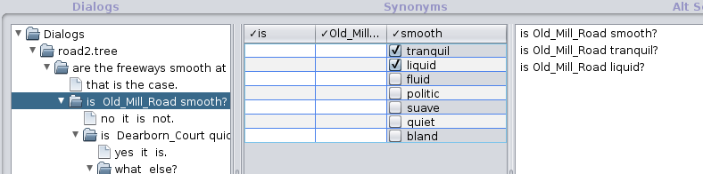
The left panel shows the dialog, the middle panel contains replacements for some of the words (for example in the sentence "Is Old Mill Road smooth?" the word "smooth" may be replaced by "quiet." There are other possible synonyms for "smooth" but the user can select the ones that are appropriate for the user's application.
When the synonyms are initially loaded, only the first few are selected. But the user can deselect these or select new ones, or add new ones of their own.
The right side panel contains some replacements of the original sentence. This list shows all the sentences that are created using synonyms found in the synonyms table.
This is not an editable list (as of now.) If you want to have new sentences you should either modify the synonyms table, or (for completely different sentences), you should modify the dialog tree.
Target System
Currently the speech applications produced by this system work under Linux and any other environment supporting Java. The caveat is that the microphone and speaker control through Java work on the target platform.
Later versions are targeted to support mobile devices as well as desktop operating systems.
Synonyms Table
As shown earlier, when you select any line in the dialog tree, that sentence is just one of many ways to ask or answer the same thing. One method to get other forms of sentences is to replace some of the words in the original sentence. The synonyms table finds possible synonyms using a thesaurus, for English it uses Wordnet.
You can select or deselect the options that are presented. You can also add new synonyms by adding a row (right click on the last row, and select Add Row from the popup menu.
The synonyms table also parses the sentences in the dialog tree using an open source statistical parser. Synonyms that are found from thesaurus are substituted in the sentence to see if the parse is still the same. However the parser is not always correct. For example, in the sentence "are the roads smooth?" the parser may interpret "smooth" as a verb.
Select a database
You can create dialogs containing words from databases. For example suppose you want to ask "is X the best airline to Hawaii?" X could be replaced with names of various airlines. This list of names can come from a column of a database. The Select DB button lets you select a database that contains such information.
At present, you can connect to databases through a JDBC interface. At present you can select MySql (or MariaDB) and Postgres databases. You can add support for more databases by modifying the com.jaivox.ui.db package. See Using Databases for more details.
Using Databases
JAG can connect to databases to retrieve tables. After retrieving a table, entries in the table can be used in questions and answers generated by the user's dialog.
Selecting a table
The first step in using a database is to press the "Select DB" button.
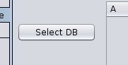
This brings up a window where you can enter details about your database and how you connect to it. Many of the details can be specified in a file dbglobals.properties in apps/common. This describes the JDBC connector you are using and some details about your database installation including login properties. You also specify the database to be used in this file.
When you press the Select DB button you may get a dialog where you can select the JDBC interface to your database.
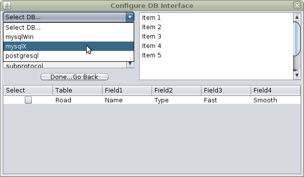
Once you select the database type, you will see the tables that are available from the database specified in dbglobals.properties.
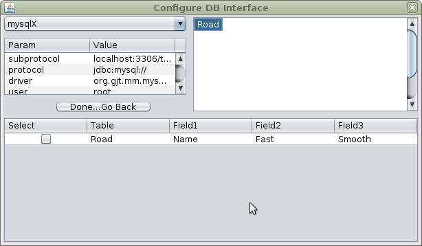
Select one of those tables and the area below the selection area will fill with a line showing the fields in that table. Click on the checkbox and then click on the button "Done ... Go Back". Then the popup window will disappear and there will be a table next to the Select DB button showing data from the selected table.
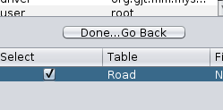
Using entries from a database table
Once you have selected a table, you can use the entries in the database as synonyms in your questions or answers.
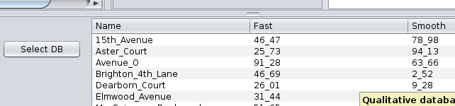
For example, suppose you have a question "Is Elmwood Avenue slow", you could replace the name "Elmwood Avenue" with another street name from a database table.
 To make an underlying parser keep "Elmwood Avenue" as a single word, we change the quoted strings (quoted with double quotes as in Java or C) into Elmwood_Avenue. The same type of change is made to database entries, since we cyould be replacing multiple words like "Elmwood Avenue" with other multiple word string like "Dearborn Court".
This is done by dragging words from the database table to be synonyms for the road name shown here. To drag something, select it in the database table, then drag it to the last blank row for the word you want to replace. If there is no blank row, a new row will be created when you drag the word you want to the last row of the synonyms table.
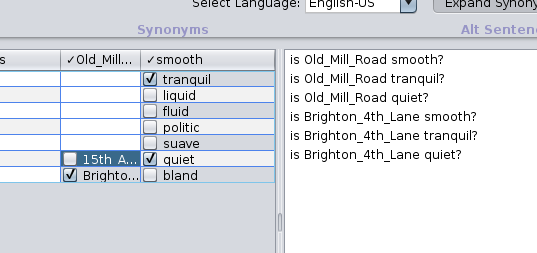
You can select multiple items from the database and drag them all to the last row. You can also undo your actions.
After this is done, the newly added words (if they are still checked) will be used in generating the question.
To make an underlying parser keep "Elmwood Avenue" as a single word, we change the quoted strings (quoted with double quotes as in Java or C) into Elmwood_Avenue. The same type of change is made to database entries, since we cyould be replacing multiple words like "Elmwood Avenue" with other multiple word string like "Dearborn Court".
This is done by dragging words from the database table to be synonyms for the road name shown here. To drag something, select it in the database table, then drag it to the last blank row for the word you want to replace. If there is no blank row, a new row will be created when you drag the word you want to the last row of the synonyms table.
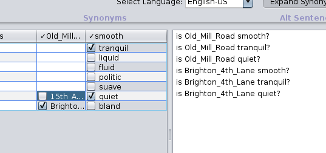
You can select multiple items from the database and drag them all to the last row. You can also undo your actions.
After this is done, the newly added words (if they are still checked) will be used in generating the question.